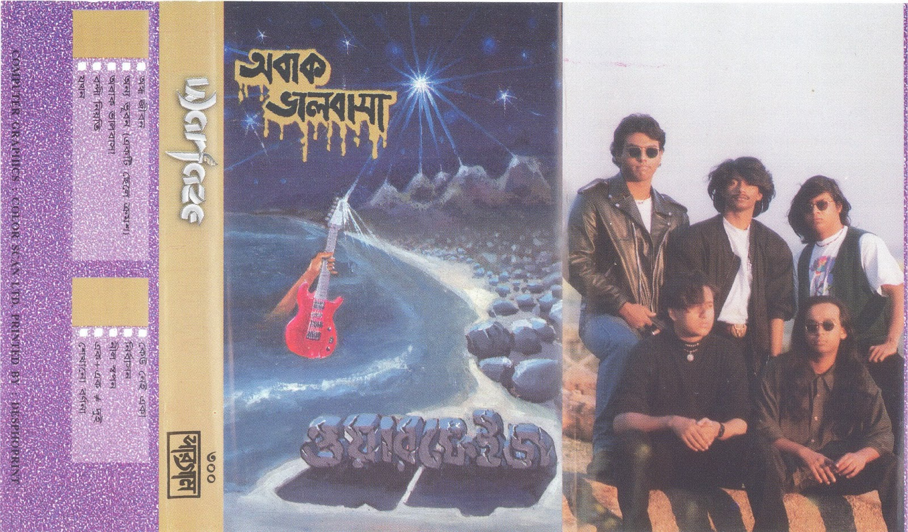

অবাক ভালোবাসা(Obak valobasha)
March 4, 2013

ব্যান্ডঃ ওয়ারফেজ
অ্যালবামঃ অবাক ভালোবাসা/ পথচলা
listen the song
সব আলো নিভে যাক আঁধারে
শুধু জেগে থাক ঐ দুরের তারারা
সব শব্দ থেমে যাক নিস্তব্ধতায়
শুধু জেগে থাক এই সাগর
আমার পাশে
সব বেদনা মুছে যাক স্থিরতায়
হৃদয় ভরে যাক অস্তিত্বের আনন্দে
হৃদয় গভীরে অবাক দৃষ্টিতে
থমকে দাড়িয়েছে মহাকাল এখানে
শুভ্র বালুর সৈকতে
এলোমেলো বাতাসে গিটার হাতে
নিস্তব্ধতা চৌচির
উন্মাদ ঝংকারে কাঁদি অবাক সুখের কান্না
যেন চুনি হিরা পান্না
সাগরের বুকে
আলপনা এঁকে দিয়ে যায়
অবাক ভালোবাসায়
অবাক ভালোবাসায়
সব আলো নিভে যাক আঁধারে
শুধু জেগে থাক ঐ দুরের তারারা
সব শব্দ থেমে যাক নিস্তব্ধতায়
শুধু জেগে থাক এই সাগর
আমার পাশে
সব কষ্ট বয়ে যাক সুখের ঝড়
হৃদয় ভরে যাক সহজ নীল স্বপনে
হৃদয় গভীরে অবাক দৃষ্টিতে
থমকে দাড়িয়েছে মহাকাল এখানে
শুভ্র বালুর সৈকতে
এলোমেলো বাতাসে গিটার হাতে
নিস্তব্ধতা চৌচির
উন্মাদ ঝংকারে কাঁদি অবাক সুখের কান্না
যেন চুনি হিরা পান্না
সাগরের বুকে
আলপনা এঁকে দিয়ে যায়
অবাক ভালোবাসায়
অবাক ভালোবাসায়